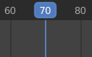
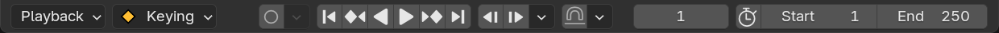
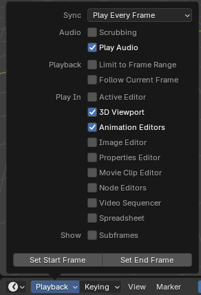
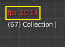
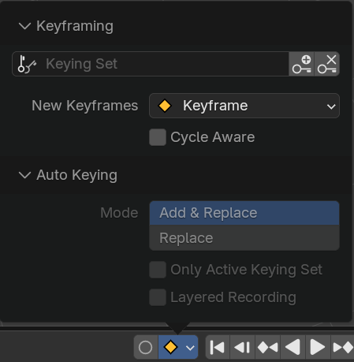
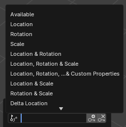
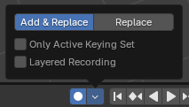
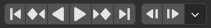
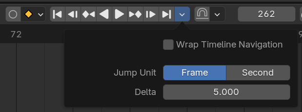

Các Animation Editor¶
Blender cung cấp một bộ editor được thiết kế để tạo, chỉnh sửa và tinh chỉnh animation. Các editor này cho phép bạn làm việc với keyframe, curve, action phi tuyến, driver, dựng video và motion tracking như một phần của quy trình animation.
Mỗi editor phục vụ một mục đích khác nhau:
Dope Sheet tổ chức và thao tác các keyframe trên nhiều object và data-block.
Graph Editor cung cấp khả năng kiểm soát chi tiết F-Curve để tinh chỉnh chuyển động và interpolation.
Nonlinear Animation (NLA) Editor sắp xếp và phân layer các animation action cho việc dựng phức tạp.
Drivers Editor liên kết các thuộc tính với biểu thức cho animation thủ tục (procedural).
Movie Clip Editor hỗ trợ motion tracking, chỉnh sửa mask và ổn định hình ảnh, có thể tích hợp vào quy trình animation và compositing.
Video Sequence Editor (VSE) kết hợp các animation đã render, chuỗi ảnh, âm thanh và hiệu ứng thành một bản dựng phim hoàn chỉnh.
Kết hợp lại, các editor này tạo thành xương sống của hệ thống animation của Blender -- từ điều chỉnh keyframe nhanh cho đến rigging nâng cao, chỉnh sửa chuyển động, tích hợp hiệu ứng hình ảnh và lắp ghép shot cuối cùng.
Trang này mô tả các tính năng dùng chung giữa các editor chuyên về animation.
Playhead¶

Playhead.¶
Playhead là đường thẳng đứng màu xanh dương hiển thị số frame hiện tại.
Nó có thể được di chuyển đến vị trí mới bằng cách nhấp hoặc kéo LMB trong vùng scrubbing ở trên cùng, hoặc nhấp và kéo Shift-RMB ở bất kỳ đâu trong timeline.
Trong khi kéo, nó có thể snap tới các phần tử của editor nơi nó đang được kéo. - Seconds - Frames - Markers - Strips - Keys
Chỉ có thể snap tới các phần tử hiển thị trong editor nơi playhead được kéo. Ví dụ, bật "Strips" nhưng kéo trong Graph Editor sẽ không có tác dụng gì. Snapping có thể được bật/tắt trong khi scrubbing bằng cách giữ Ctrl.
Snap theo giây hoặc frame có thể có bước nhảy tùy chỉnh, ví dụ snap cứ mỗi ba frame. Bước này luôn tính tương đối theo frame đầu tiên của scene và bỏ qua preview range. Khác với các tùy chọn snap khác, giây và frame luôn snap tới vị trí gần nhất, bất kể khoảng cách snap đã đặt. Khi trộn các tùy chọn, hệ thống sẽ trước tiên thử snap tới các phần tử snap theo khoảng cách. Chỉ khi không có phần tử nào đủ gần, nó mới snap theo giây hoặc frame.
Bạn cũng có thể di chuyển nó từng frame một bằng cách nhấn Left hoặc Right hoặc Alt-Wheel. Để nhảy tới frame đầu hoặc cuối (các đầu mút của preview range nếu nó đang hoạt động), hãy nhấn Shift-Left hoặc Shift-Right.
Snapping¶
Tham khảo
- Menu:
Playhead snapping giúp bạn định vị playhead chính xác khi scrubbing timeline bằng cách snap nó tới các phần tử cụ thể như frame, marker hoặc keyframe.
- Use Snapping
Bật hoặc tắt hành vi snapping khi di chuyển playhead.
- Snap Distance
Khoảng cách tối đa (tính bằng pixel) mà playhead có thể cách một mục tiêu trước khi snap vào nó.
- Snap Target
Chỉ định playhead có thể snap tới những phần tử nào:
- Frames:
Snap theo khoảng cách frame.
- Seconds:
Snap theo khoảng cách giây.
- Markers:
Snap theo các marker của timeline.
- Keyframes:
Snap theo các keyframe của animation.
- Strips:
Snap tới điểm đầu và điểm cuối của các strip (ví dụ trong Video Sequencer).
- Frame Step Frames
Khoảng cách tính bằng frame giữa mỗi điểm snap khi dùng mục tiêu Frames.
- Second Step Seconds
Khoảng cách tính bằng giây giữa mỗi điểm snap khi dùng mục tiêu Seconds.
Playback Controls¶
Vùng Playback Controls của các animation editor (như Timeline, Dope Sheet, Graph Editor và NLA Editor) chứa các điều khiển và tùy chọn liên quan đến phát lại, keying, auto keyframing và transport.
Những cài đặt này cho phép bạn:
Điều khiển cách xem trước animation và đồng bộ với âm thanh.
Chèn và quản lý keyframe thông qua keying set và auto keying.
Di chuyển trong timeline bằng các điều khiển phát lại và transport.
Điều chỉnh khoảng frame và xem trước những đoạn animation cụ thể.
Footer được dùng chung giữa các animation editor để mang lại quy trình nhất quán cho animator, dù họ đang chỉnh sửa keyframe, điều chỉnh curve hay sắp xếp action.

Playback¶
Các thuộc tính quy định cách animation được phát.

Timeline¶
- Sync

FPS màu đỏ trong 3D Viewport.¶
Nếu việc phát animation không theo kịp Frame Rate mong muốn, frame rate thực tế (hiển thị ở góc trên bên trái của 3D Viewport) sẽ chuyển sang màu đỏ, và tùy chọn Sync quyết định cách xử lý tình huống đó.
- Play Every Frame:
Phát mọi frame, kể cả nếu điều này khiến animation phát chậm hơn dự kiến.
- Frame Dropping:
Bỏ frame nếu việc phát trở nên chậm hơn frame rate của scene.
- Sync to Audio:
Bỏ frame nếu việc phát quá chậm đến mức không thể giữ đồng bộ với âm thanh.
- Playback -- Limit to Frame Range
Không cho phép di chuyển Playhead ra ngoài Frame Range bằng chuột.
- Playback -- Allow Preroll
Cho phép việc phát tiếp tục trước Start Frame.
Điều này hữu ích khi bắt đầu phát từ ngoài khoảng frame của scene, chẳng hạn khi scrubbing các frame sớm hơn hoặc xem trước chuyển động dẫn vào khoảng frame đã định nghĩa.
Tùy chọn này bị tắt khi Limit to Frame Range được bật.
- Playback -- Follow Current Frame
Tự động di chuyển khung nhìn để theo kịp khi Playhead đi ra ngoài màn hình.
- Loop
Quy định điều gì xảy ra khi việc phát đạt đến frame cuối.
- Infinite:
Sau frame cuối, việc phát nhảy về frame đầu và tiếp tục phát vô hạn.
- Stop at End Frame:
Việc phát dừng lại khi đạt frame cuối.
- Stop at Start Frame:
Sau khi đạt frame cuối, việc phát nhảy về frame đầu và dừng lại.
- Restore Frame:
Sau khi đạt frame cuối, việc phát dừng ở frame nơi việc phát được bắt đầu ban đầu.
- Bounce:
Khi đạt frame cuối, việc phát đảo chiều.
- Show -- Subframes
Hiển thị và cho phép đặt giá trị frame thập phân cho frame hiện tại.
Audio¶
- Audio -- Scrubbing
Phát những đoạn âm thanh trong animation (nếu có) khi bạn kéo Playhead qua lại.
- Audio -- Play Audio
Bỏ chọn để tắt tiếng toàn bộ âm thanh.
Editors¶
- Play In
Những editor nào sẽ được cập nhật trên mỗi frame animation. Nếu một editor không được chọn, nó sẽ chỉ được cập nhật một lần khi việc phát dừng lại (với một số ngoại lệ nơi nó vẫn cập nhật trên từng frame). Khi bắt đầu phát trong Graph Editor, Dope Sheet hoặc NLA Editor, tất cả editor sẽ phát lại bất kể cài đặt. Đây là tính năng được các animator đề xuất để dễ dàng phát lại mọi khung nhìn.
Sequencer¶
- Sync -- Scene Time
Xem Sync Scene Time.
- Set Start/End Frame
Đặt frame đầu/cuối của scene thành frame hiện tại. Nếu Preview Range đang hoạt động (xem Frame Controls), thì khoảng đó sẽ được thay đổi thay thế.
Keyframing¶
Popover Keyframing chứa các tùy chọn ảnh hưởng đến việc chèn keyframe. Nút record () bật auto keying (xem bên dưới).

- Active Keying Set

Các Keying Set của Timeline.¶
Một Keying Set là một tập hợp có tên gồm các thuộc tính có thể animate. Nếu bạn chọn một keying set rồi nhấn I khi không di chuột trên bất kỳ trường nhập liệu nào, Blender sẽ tạo keyframe cho các thuộc tính trong keying set đó.
Nếu bạn không chọn keying set nào, bạn sẽ nhận được keyframe trên một tập thuộc tính mặc định thay thế (ví dụ: Location/Rotation/Scale cho object).
Có một số keying set được định nghĩa sẵn, nhưng bạn cũng có thể tự tạo trong panel Keying Sets.
- Insert Keyframes I
Chèn keyframe tại frame hiện tại.
- Delete Keyframes Alt-I
Xóa keyframe tại frame hiện tại.
- New Keyframes
Kiểu keyframe cho các keyframe mới tạo.
- Cycle Aware
Khi chèn keyframe vào các curve tuần hoàn giản đơn, quy trình xử lý đặc biệt được áp dụng để bảo toàn tính toàn vẹn của chu kỳ (hữu ích nhất khi tinh chỉnh một chu kỳ đã thiết lập):
Nếu việc chèn key được thử bên ngoài khoảng thời gian chính của chu kỳ, nó sẽ được ánh xạ ngược vào trong khoảng.
Khi ghi đè một trong hai key ở hai đầu, key còn lại sẽ được cập nhật tương ứng.
Ngoài ra, khi thêm một curve mới vào một action có Manual Frame Range và Cyclic Animation được bật, curve sẽ tự động được làm tuần hoàn với chu kỳ khớp với khoảng frame. Để tiện lợi, việc kiểm tra và chuyển đổi này cũng được thực hiện trước khi thêm keyframe thứ hai vào một curve như vậy.
Auto Keying¶

Nút Auto Keying.¶
Khi nút record () được bật, Blender sẽ tự động tạo keyframe tại frame hiện tại bất cứ khi nào bạn transform một object hoặc bone trong 3D Viewport (hoặc thay đổi một trong các thuộc tính transform của nó trong Properties Editor).
Một trường hợp sử dụng đặc biệt là ghi lại đường đi của camera khi bạn bay qua scene. Xem Fly/Walk Navigation.
Ghi chú
Auto Keying chỉ hoạt động cho các thuộc tính transform (Location, Rotation, Scale). Nó sẽ không tạo keyframe nếu bạn thay đổi, chẳng hạn, màu sắc của một material -- việc đó bạn vẫn phải làm thủ công.
- Mode
- Add & Replace:
Thêm hoặc thay thế keyframe khi cần.
- Replace:
Chỉ thay thế các keyframe đã có.
- Only Active Keying Set
Theo mặc định, Auto Keying sẽ tạo keyframe cả cho những thuộc tính không nằm trong keying set đang hoạt động. Dùng checkbox này để thay đổi điều đó.
- Layered Recording
Thêm một NLA Track mới cho mỗi lượt ghi trên animation, cho phép tinh chỉnh không phá hủy.
Transport Controls¶
Các nút này dùng để đặt frame hiện tại và điều khiển việc phát.

Các điều khiển transport.¶
- Jump to Start Shift-Left
Đặt Playhead về đầu khoảng frame.
- Jump Backward by Delta Ctrl-Left
Nhảy playhead lùi lại một khoảng delta do người dùng cấu hình.
- Jump to Previous Keyframe Up
Di chuyển Playhead tới keyframe trước đó.
- Rewind Shift-Ctrl-Spacebar
Bắt đầu phát animation theo chiều ngược.
- Play Spacebar
Bắt đầu phát animation.
- Pause Spacebar
Dừng phát animation.
- Jump to Next Keyframe Down
Di chuyển Playhead tới keyframe kế tiếp.
- Jump Forward by Delta Ctrl-Right
Nhảy playhead tới trước một khoảng delta do người dùng cấu hình.
- Jump to End Shift-Right
Đặt Playhead về cuối khoảng frame.
Playback Options¶
Popover bên cạnh các điều khiển transport chứa các cài đặt quy định Playhead di chuyển bao xa khi dùng các operator này.

Các tùy chọn Playback cho các bước nhảy thời gian.¶
- Jump Unit
Quy định đơn vị được dùng bởi các operator Jump Forward/Backward by Delta.
- Frame:
Nhảy theo một số frame được chỉ định.
- Second:
Nhảy theo một khoảng thời gian tính bằng giây được chỉ định. Số frame tương ứng phụ thuộc vào frame rate của scene.
- Delta
Số frame hoặc giây để di chuyển Playhead khi dùng Jump Forward/Backward by Delta. Đơn vị được quyết định bởi Jump Unit.
Frame Controls¶
- Current Frame Alt-Wheel
Số của frame đang được hiển thị trong 3D Viewport. Đây cũng là vị trí của Playhead.
- Use Preview Range
Preview Range là một Frame Range thay thế mà bạn có thể dùng để tập trung vào một phần cụ thể của animation. Nó cho phép bạn phát lặp lại một đoạn ngắn mà không cần tự tua lại hay thay đổi khoảng frame của toàn bộ scene.
Khoảng này chỉ ảnh hưởng đến bản xem trước trong 3D Viewport; nó không ảnh hưởng đến rendering.
Ranh giới của Preview Range được hiển thị bằng màu cam đậm. Bạn có thể nhanh chóng cấu hình và bật nó bằng cách nhấn P rồi kéo một khung. Để tắt nó, bạn có thể nhấn Alt-P.
- Start, End
Frame đầu/cuối của scene (hoặc preview range, nếu đang hoạt động).